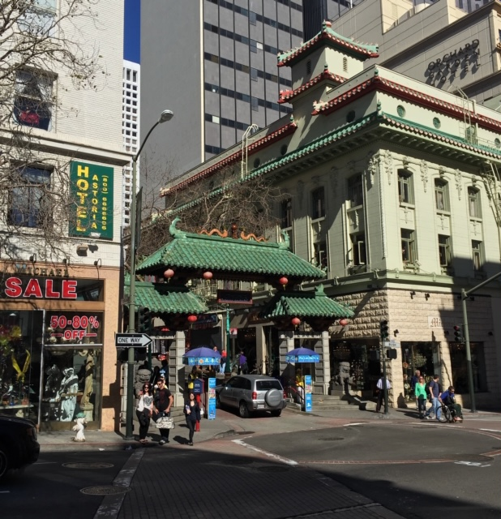
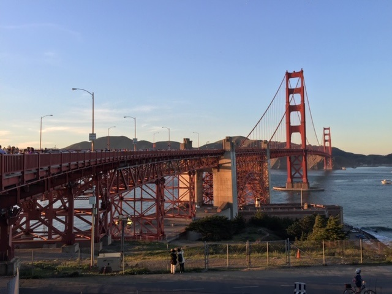
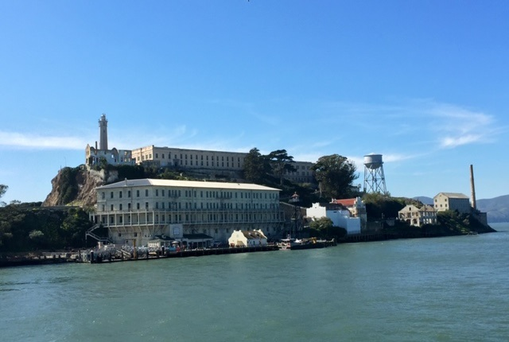
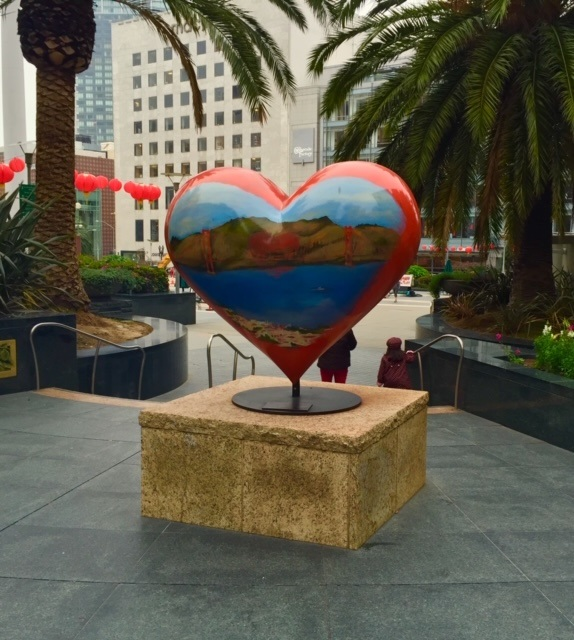

Traveling has always been one of my greatest passions that makes life more exciting for me. Every year I make plans to travel to a new destination that I've never been before. I've been fortunate to have great friends that life in amazing cities. This website is a view into the cities and adventures I've had for the last few years. In addition to traveling I have been training in Brazilian Jitsu for years as well, indoor rock climbing, and mountain biking my Kona mountain bike. I've included links below to both gyms that I belong to and the link to Kona bikes below.
Seattle Chicago Costa Rica PhiladelphiaA few years ago one of my good friends moved to San Franciso right into downtown San Francisco for work. It didn't take long before we coordinated a time for me to fly from Florida to San Francisco for a few days. Upon arriving on at the San Francisco I took the train from the airport to downtown San Franscisco where I met my friend at his apartment and dropped off my luggage.

My friend lived in downtown San Francisco which made everything convenient to walk to or take a quick Uber or Lyft during my visit. Our first stop was Chinatown which was only a few blocks away. Upon arriving to the Chinatown street entrance you'll see there is an immense and ornately constructed chinese entrance called the Dragon's Gate shown in the photograph above. According to SanFranciscochinatown.com this street is the largest Chinatown outside of Asia as well as the oldest Chinatown in North America. The street had a big number of tourists purchasing many Chinese souvenirs and food.

During my vacation in San Franscisco, my friend and I took a Lyft to the Golden Gate Bridge. I can say that I was not prepared for how massive and an impressive an architectural built this was. The Golden Gate Bridge is about 1.7 miles long and it connects San Francisco to the tip of the San Francisco to Marin county. It is one of the most iconic and internationally recognized structures in San Francisco from around the world. You're able to walk on an enclosed sidewalk from one side of the bridge to the other. My friend and I walked about halfway and then came back. There are many tourists taking this walk and talking family and pictures with their friends. The Golden Gatge Bridge is one of the most immensely buily structures I have seen to date with phenomal views of the bay and city.

Fun Fact: Many movies have been made on Alcatraz including "Escape from Alcatraz" with Clint Eastood and "The Rock" with Nicolas Cage and Sean Connery.
I've always been fascinated with Alctraz Island and I was lucky enough to purchase two tickets for me and my friend on my stay. Typically the waiting period for Alcatraz is at least one month out and someone happened to cancel their reservation. Alcatraz can only be visited by the way of an official tour boat which you board in the Wharf area and take a double decker boat to the island. After about a 20 minute boat ride in the San Francisco Bay. This was by far one of the best experiences of my trip. While on the island you are given a pair of headphones which has an audio recording built in of a guard from alacatraz that guides you through the jail cells and gives you experiences of the prison life. The audio recording is choreographed as if you're an inmate in Alcatraz and how your life would be. The audio recording also goes over the infamos story of the mena that escaped Alcatraz and were never found. There are many ideas if the men drowned in the choppy, shark infested waters, or made it to shore and escaped to Mexico. Their disappearance is a mystery to this day.

I was fortunate enough to spend a few days in San Francisco and can see why it's a vacation destination for many people. The city is very diverse with many cultures, food, and iconic places to visit. I found that not only were the sites amazing but the people of the city were very friendly. I have raved with passion about San Francisco and highly recommend a trip to anyone for a few days to see all the amazing sites the city has to offer.
Below I've listed a travel blog for San Francisco and three attractions with links that offer more detailed information about each attraction to visit.
The Ultimate Guide to San Francisco in a weekend
| Top Attractions in San Francisco | Websites |
|---|---|
| Golden Gate Bridge | San Fran Travel |
| Alcatraz Island | Alcatraz Island |
| Pier 39 | Pier 39 |